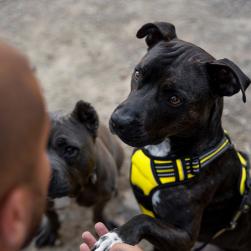

CONOCE A LALITO
Lalito fue rescatado de las calles, donde pasaba sus días buscando un lugar seguro. Llegó tímido, hambriento y muy cansado... pero poco a poco descubrió que las caricias también pueden sanar. Hoy es una bolita de amor listo para encontrar un hogar donde por fin lo quieran como merece.
- ❤️ Edad: 2 años
- 👁️ Sexo: Macho
- 🦮 Raza: Mestizo
- 📏 Tamaño: Mediano
- 😊 Comportamiento: Sociable y amigable.
- 🩺 Estado de salud: Vacunado y desparasitado
 ADOPTAR AHORA
ADOPTAR AHORA